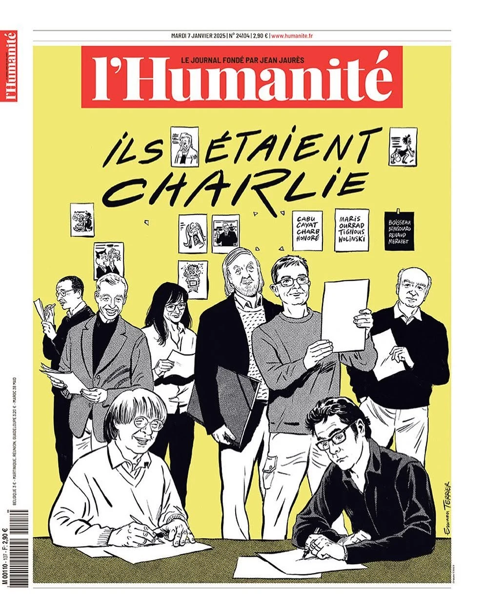

Publication relayée par le PCF 79
« Ils étaient Charlie » à la une de L’Humanité le 7 janvier 2025
Date de mise à jour indiquée par Facebook · 7 janvier 2025
Texte de la publication · L’Humanité
L’Humanité du 7 janvier 2025 : ils étaient Charlie
humanite.fr

Sources
L’Humanité · publication relayée par le PCF 79 · bibliothèque Facebook · AR-0002-FB-01211
À lire aussi · « Toujours debout ! », l’éditorial de L’Humanité dix ans après l’attentat contre Charlie Hebdo